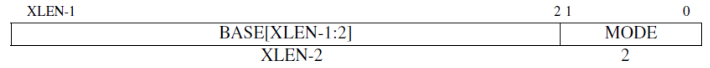

Trap
本章代码对应分支：trap
RISCV 中的中断异常
在 RISCV 特权指令集手册中，描述了与中断处理相关的 CSR 寄存器：
- sscratch: 一个字的临时存储空间，一般用来辅助中断处理
- sstatus: 系统状态寄存器
- stvec: 中断跳转地址
- scause: 中断或异常的原因
- sepc: 发生中断时的位置 / PC
与中断相关的指令：
- sret: S 态中断返回
- ecall: 向底层执行环境发出调用请求，用来进行系统调用
- ebreak: 触发断点异常
为了能够方便的对寄存器进行操作，我们引入头文件 riscv ：
Cargo.toml
[dependencies]
riscv = { path = "crate/riscv", features = ["inline-asm"] }
# riscv = { git = "https://github.com/rcore-os/riscv", features = ["inline-asm"] }
该头文件基本实现了 riscv 寄存器的所有功能，使得我们可以尽量避免显式使用汇编代码 你可以直接将我的仓库里的代码复制到你的目录下 也可以去 riscv 仓库 自行下载（可能略有不一样） 后续我们会通过相同的方式引入其它头文件
设置中断入口点
当我们的程序遇上中断或异常时，cpu 会跳转到一个指定的地址进行中断处理。在 RISCV 中，这个地址由 stvec 控制寄存器保存：

ebreak和ecall严格来说属于主动触发的异常。异常是在执行指令的过程中“同步”发生的，相对地中断则是“异步”发生的，由外部信号触发（如时钟、外设、IPI）。
stvec 中包含了 向量基址（BASE） 和 向量模式（MODE） ，其中 向量基址（BASE） 必须按照 4 字节对齐。
RISCV 中有两种中断入口模式：
- 直接模式（Driect） MODE = 0 ，触发任何 中断异常 时都把 PC 设置为 BASE
- 向量模式（Vectored）
MODE = 1 ，对第 i 种 中断 ，跳转到
BASE + i * 4；对所有 异常 ，仍跳转到 BASE
为了实现简单，我们采用第一种模式，先进入统一的处理函数，之后再根据中断/异常种类进行不同处理。
在 main.rs 的同级目录下创建 interrupt.rs ：
lib.rs
mod interrupt;
interrupt.rs
use riscv::register::{ scause, sepc, stvec, sscratch };
pub fn init() {
unsafe {
sscratch::write(0); // 给中断 asm 初始化
stvec::write(trap_handler as usize, stvec::TrapMode::Direct);
}
println!("++++setup interrupt !++++");
}
fn trap_handler() -> ! {
let cause = scause::read().cause();
let epc = sepc::read();
println!("trap: cause: {:?}, epc: {:#x}", cause, epc);
panic!("trap");
}
init.rs
#[no_mangle]
pub fn rust_main() -> ! {
crate::interrupt::init();
unsafe{
asm!("ebreak"::::"volatile");
}
panic!("End of rust_main");
}
由于现在还无法恢复中断，我们用 panic 结束这个函数，并用 -> ! 标记此函数永不返回。
make run 运行，我们看到程序成功触发了异常并进入了处理函数：
++++setup interrupt !++++
trap: cause: Exception(Breakpoint), epc: 0x80400028
panicked at 'trap', src/interrupt.rs:15:5
创建栈帧结构体
上面这个简单的中断处理函数无法返回，原因是处理函数会覆盖掉原有的寄存器信息。为了能够恢复中断之前的状态，我们需要保存当前 所有寄存器 的状态，然后处理中断，最后恢复寄存器状态，继续执行之前的命令。我们需要按照特定的格式保存寄存器，以便于我们使用 中断帧(TrapFrame) 结构体查看或修改这些寄存器。可以理解为，在一片连续的内存空间中存放了我们寄存器的状态，我们通过这片空间的首地址（指针）来访问他们。
riscv32 中有 32 个通用寄存器和部分特殊寄存器。在 main.rs 的同级目录下创建 context.rs 文件。栈帧结构体的实现如下：
lib.rs
mod context;
context.rs
use riscv::register::{
sstatus::Sstatus,
scause::Scause,
};
#[repr(C)]
#[derive(Debug)]
pub struct TrapFrame {
pub x: [usize; 32], // General registers
pub sstatus: Sstatus, // Supervisor Status Register
pub sepc: usize, // Supervisor exception program counter
pub stval: usize, // Supervisor trap value
pub scause: Scause, // Scause register: record the cause of exception/interrupt/trap
}
其中 #[repr(C)] 表示对这个结构体按 C 语言标准 进行内存布局，也就是从起始地址开始，按字段的定义顺序依次排列。如果不写的话，Rust 对它的内存布局是不确定的，会导致我们无法使用汇编代码对它进行正确的读写。
#[derive(Debug)] 使得我们可以通过 println!("{:#?}", tf) 将其打印出来。
保存和恢复寄存器
在 main.rs 的同级目录下创建 trap/trap.asm 。
在 trap/trap.asm 中实现 __alltraps 函数，用于保存所有寄存器信息，然后跳转到 interrupt.rs 的中断处理函数 rust_trap 。处理结束后，再通过 trap/trap.asm 中的 __trapret 将寄存器恢复到中断前的状态，继续执行中断前的指令。
首先编写中断处理的整体框架：
trap/trap.asm
.section .text
.globl __alltraps
__alltraps:
SAVE_ALL
mv a0, sp
jal rust_trap
.globl __trapret
__trapret:
RESTORE_ALL
# return from supervisor call
sret
.globl 表示该符号是一个全局符号，可以被外部访问。 .section .text 将 __alltraps 和 __trapret 放到程序的同一个代码段中，使得 __alltrap 执行完后会继续执行 __trapret 。
SAVE_ALL和RESTORE_ALL稍后实现
看回 __alltrap ，在 jal rust_trap 被调用之前，我们执行了 mv a0, sp 。其中 a0 是 riscv32 中的参数寄存器，用于存放下一个调用的函数的参数。我们将 a0 赋值为 sp ，也就是栈帧的地址。这样便成功的将栈帧作为参数传递给了 rust_trap 。
trap/trap.asm 中，SAVE_ALL 用于保存所有的寄存器的状态，RESTORE_ALL 则用于恢复所有的寄存器的状态。
为了增加代码的可读性，我们还定义了一些宏：
.equ XLENB, 4 # 字长为 4 Byte
.macro LOAD a1, a2 # 读取内存地址 sp+a2*4 的值到寄存器 a1
lw \a1, \a2*XLENB(sp)
.endm
.macro STORE a1, a2 # 将寄存器 a1 的值保存到内存地址 sp+a2*4
sw \a1, \a2*XLENB(sp)
.endm
SAVE_ALL
.macro SAVE_ALL
# If coming from userspace, preserve the user stack pointer and load
# the kernel stack pointer. If we came from the kernel, sscratch
# will contain 0, and we should continue on the current stack.
csrrw sp, sscratch, sp
bnez sp, trap_from_user
trap_from_kernel:
csrr sp, sscratch
# sscratch = previous-sp, sp = kernel-sp
trap_from_user:
# provide room for trap frame
addi sp, sp, -36*XLENB
# save x registers except x2 (sp)
STORE x1, 1
STORE x3, 3
STORE x4, 4
STORE x5, 5
STORE x6, 6
STORE x7, 7
STORE x8, 8
STORE x9, 9
STORE x10, 10
STORE x11, 11
STORE x12, 12
STORE x13, 13
STORE x14, 14
STORE x15, 15
STORE x16, 16
STORE x17, 17
STORE x18, 18
STORE x19, 19
STORE x20, 20
STORE x21, 21
STORE x22, 22
STORE x23, 23
STORE x24, 24
STORE x25, 25
STORE x26, 26
STORE x27, 27
STORE x28, 28
STORE x29, 29
STORE x30, 30
STORE x31, 31
# get sp, sstatus, sepc, stval, scause
# set sscratch = 0
csrrw s0, sscratch, x0
csrr s1, sstatus
csrr s2, sepc
csrr s3, stval
csrr s4, scause
# store sp, sstatus, sepc, sbadvaddr, scause
STORE s0, 2
STORE s1, 32
STORE s2, 33
STORE s3, 34
STORE s4, 35
.endm
一上来我们就遇到一个尴尬的局面：中断可能来自用户态（U-Mode），也可能来自内核态（S-Mode）。如果是用户态中断，那么此时的栈指针 sp 指向的是用户栈；如果是内核态中断，那么 sp 指向的是内核栈。现在我们希望把寄存器保存在内核栈上， 这就要求有一个通用寄存器指向内核栈。对于内核态中断来说，直接使用 sp 就可以了，但对于用户态中断，我们需要在不破坏 32 个通用寄存器的情况下，切换 sp 到内核栈。
解决问题的关键是要有一个可做交换操作的临时寄存器，这里就是 sscratch 。
我们规定：当 CPU 处于 U-Mode 时，sscratch 保存内核栈地址；处于 S-Mode 时，sscratch 为 0 。
接下来我们考察中断处理的前三条指令，它们利用 sscratch 的性质巧妙地完成了切换栈的操作：
# 交换 sp 和 sscratch 寄存器
csrrw sp, sscratch, sp
# 判断 sp（也就是交换前的 sscratch）是否为0
# 如果非0，说明是用户态中断，由于 sscratch 保存的是内核栈地址
# 此时 sp 已经指向内核栈，直接跳转到 trap_from_user 保存寄存器
bnez sp, trap_from_user
# 否则说明是内核态中断
trap_from_kernel:
# 只需从 sscratch 中读出原来的 sp 即可
csrr sp, sscratch
# 此时 sscratch = 发生中断前的 sp
# sp = 内核栈
trap_from_user:
后面的事情就比较简单了：此时 sp 指向的是内核栈的栈底，接下来我们要把 TrapFrame 保存在栈上，因此先将它下移相当于 TrapFrame 大小的距离（36 * 4 Byte），然后依次保存除 x0(zero) 和 x2(sp) 外的 30 个通用寄存器：
trap_from_user:
# 为 TrapFrame 预留空间
addi sp, sp, -36*XLENB
# 保存通用寄存器（sp 除外）
STORE x1, 1
STORE x3, 3
STORE x4, 4
...
STORE x31, 31
x0 永远是 0，不用保存；sp 本应保存的是发生中断前的值，这个值目前被交换到了 sscratch 中，因此留到后面处理。
接下来保存 CSR 寄存器，此时通用寄存器已经可以随意使用了：
# 读取 sp, sstatus, sepc, stval, scause
# 按照规定，进入内核态后 sscratch 应为 0
csrrw s0, sscratch, x0
csrr s1, sstatus
csrr s2, sepc
csrr s3, stval
csrr s4, scause
# 保存 sp, sstatus, sepc, stval, scause
STORE s0, 2
STORE s1, 32
STORE s2, 33
STORE s3, 34
STORE s4, 35
SAVE_ALL 就这样结束了，紧接着两条指令让我们跳转到 Rust 代码：
mv a0, sp
jal rust_trap
interrupt.rs
use riscv::register::{ stvec, sscratch };
use crate::context::TrapFrame;
global_asm!(include_str!("trap/trap.asm"));
pub fn init() {
extern {
fn __alltraps();
}
unsafe {
sscratch::write(0); // 给中断 asm 初始化
stvec::write(__alltraps as usize, stvec::TrapMode::Direct);
}
println!("++++setup interrupt !++++");
}
#[no_mangle]
pub fn rust_trap(tf: &mut TrapFrame) {
println!("trap: {:#x?}", tf);
panic!("trap");
}
编译运行，得到以下输出：
++++setup interrupt !++++
trap: TrapFrame {
x: [
0x80407058,
0x80400024,
0x8040cff0,
0x0,
0x8001af00,
0x8001ae50,
0x0,
0x0,
0x8040d000,
0x8001af00,
0x0,
0x0,
0x0,
0x0,
0x4,
0x0,
0x82,
0x1,
0x80008500,
0x0,
0x0,
0x0,
0x0,
0x8,
0x2000,
0x0,
0x0,
0x0,
0x0,
0x0,
0x1,
0x0,
],
sstatus: Sstatus {
bits: 0x80006100,
},
sepc: 0x80400028,
stval: 0x0,
scause: Scause {
bits: 0x3,
},
}
panicked at 'trap', src/interrupt.rs:20:5
我们成功保存了发生中断时寄存器的值！
RESTORE_ALL
恢复寄存器 RESTORE_ALL 的过程正好相反。首先根据 sstatus 寄存器中的 SPP 位，判断是回到用户态还是内核态。如果是回到用户态，根据规定需要设置 sscratch 为内核栈：
.macro RESTORE_ALL
LOAD s1, 32 # s1 = sstatus
LOAD s2, 33 # s2 = sepc
andi s0, s1, 1 << 8 # sstatus.SPP = 1?
bnez s0, _to_kernel # s0 = back to kernel?
_to_user:
addi s0, sp, 36*XLENB
csrw sscratch, s0 # sscratch = kernel-sp
_to_kernel:
# restore sstatus, sepc
csrw sstatus, s1
csrw sepc, s2
# restore x registers except x2 (sp)
LOAD x1, 1
LOAD x3, 3
LOAD x4, 4
LOAD x5, 5
LOAD x6, 6
LOAD x7, 7
LOAD x8, 8
LOAD x9, 9
LOAD x10, 10
LOAD x11, 11
LOAD x12, 12
LOAD x13, 13
LOAD x14, 14
LOAD x15, 15
LOAD x16, 16
LOAD x17, 17
LOAD x18, 18
LOAD x19, 19
LOAD x20, 20
LOAD x21, 21
LOAD x22, 22
LOAD x23, 23
LOAD x24, 24
LOAD x25, 25
LOAD x26, 26
LOAD x27, 27
LOAD x28, 28
LOAD x29, 29
LOAD x30, 30
LOAD x31, 31
# restore sp last
LOAD x2, 2
.endm
最后 __trapret 通过 sret 指令完成中断返回：CPU 根据 sstatus.SPP 确定特权级，将 sepc 恢复到 PC 。
对 rust_trap 进行一些修改：
interrupt.rs
#[no_mangle]
pub fn rust_trap(tf: &mut TrapFrame) {
println!("trap!");
}
再运行一下，发现程序不断地输出 trap! ，说明中断恢复没有问题。
为什么会反复输出
trap!
中断处理
至此我们已经为真正的中断处理函数 rust_trap 建立好了执行环境，免除了恢复中断现场的后顾之忧。后面我们会陆续添加对不同中断和异常种类的处理逻辑。
眼下我们要处理的是断点异常 Breakpoint 。
在 riscv 中，发生中断指令的 pc 被存入 sepc 。对于大部分情况，中断处理完成后还回到这个指令继续执行。但对于用户主动触发的异常（例如ebreak用于触发断点，ecall用于系统调用），中断处理函数需要调整 sepc 以跳过这条指令。
因为我们没有手动调整 sepc ，所以会反复输出 trap! 。
在 riscv 中， 一般 每条指令都是定长的 4 字节（但如果开启 压缩指令集 可就不一定了，这也导致了一个大坑），因此只需将 sepc + 4 即可，这里我们通过 increase_sepc 完成这个功能：
context.rs
impl TrapFrame {
pub fn increase_sepc(self: &mut Self) {
self.sepc = self.sepc + 4;
}
}
interrupt.rs
#[no_mangle]
pub fn rust_trap(tf: &mut TrapFrame) {
println!("trap!");
tf.increase_sepc();
}
注意！！！
这里我们强调了 一般 。在开启 压缩指令集 的情况下，对于常用指令，编译器会进行压缩，减小程序的大小。但是有时候这并不是我们希望的。比如这里因为我们要求每条指令都是精准的 32bits ，才能够通过 self.sepc = self.sepc + 4 跳转至下一条指令（否则会跳转到奇怪的地方）。在 riscv32-os.json 中，有一行 "features": "+m,+a,+c" 。默认情况下，riscv 指令集只支持加减法， +m 增加了乘除指令； +a 增加了原子操作； +c 增加了代码压缩。这里的压缩是我们不想要的，所以把 +c 删去。
至此我们简易的的中断功能已经全部实现完成，编译运行，屏幕显示：
++++setup interrupt !++++
trap!
panicked at 'End of rust_main', src/init.rs:9:5
如果未能正常 panic 可能需要先执行 cargo clean
可以看到，我们已经成功进入中断处理函数，并且返回到了 rust_main ，触发了 panic 。
预告
现在，我们已经实现了简易的中断机制。下一章，我们将在 rust_trap 中区分中断类型，对他们进行不同的处理，并且实现时钟中断。